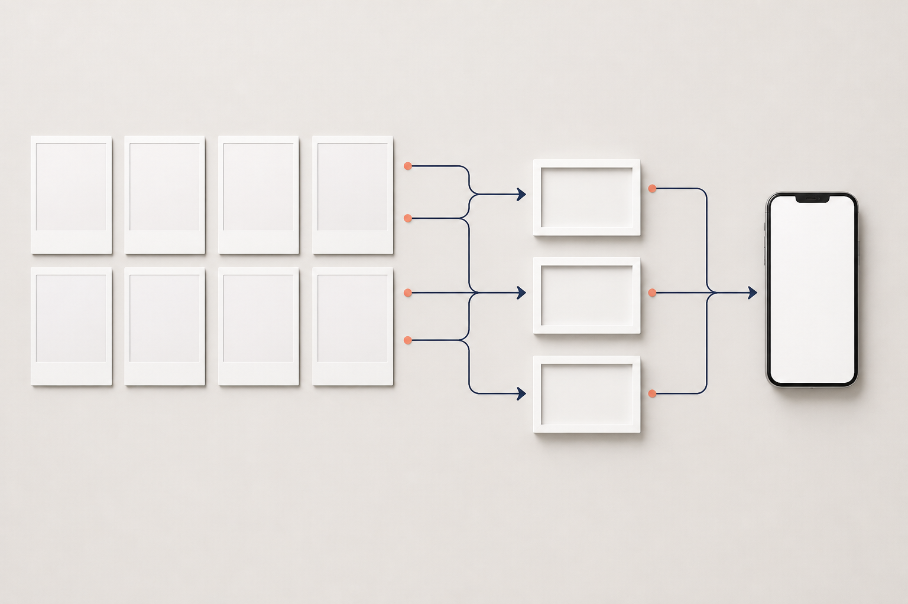

매장 사진 10장으로 블로그와 릴스까지 만들 수 있을까?
촬영 없이 매장 사진 10장으로 블로그 글 세 편과 릴스 한 편을 만드는 실제 순서를 정리했습니다. 사진을 고르는 기준, 글과 영상에 컷을 나누는 법, 자막과 편집에서 정하는 것, 10장으로 안 되는 경우까지.

결론부터 적으면 만들 수 있습니다. 다만 10장이 어떤 장면을 담고 있느냐에 따라 결과가 갈립니다. 음식 클로즈업 열 장으로는 글 세 편은 되지만 릴스는 약해지고, 외관과 내부, 음식, 사람이 섞여 있으면 글과 영상을 함께 만들 수 있습니다.
노티스랩은 업체가 제공한 기존 사진과 영상을 바탕으로 기획하고 제작합니다. 별도 현장 촬영은 기본 서비스에 포함하지 않습니다. 그래서 첫 상담에서 가장 먼저 하는 일이 보유 사진을 세는 것이 아니라, 어떤 장면이 있는지 확인하는 것입니다.
10장이면 되는 경우와 안 되는 경우#
사진의 수보다 구성이 중요합니다. 아래 항목이 골고루 있으면 10장으로도 첫 회차를 만들 수 있습니다.
- 찾아가는 장면. 외관, 간판, 입구, 주차 안내. 처음 오는 손님이 헤매지 않게 하는 컷입니다.
- 들어서는 장면. 내부 전경, 좌석이나 진열, 조명이 보이는 사진.
- 대표 상품. 메뉴나 상품을 정면에서 찍은 컷. 가격표가 함께 보이면 더 좋습니다.
- 만드는 장면. 조리, 작업, 포장 과정. 손이 나오는 사진이 있으면 영상에서 힘이 생깁니다.
- 사람. 사장님, 직원, 손님이 이용하는 모습. 얼굴 사용 동의가 확인된 사진만 씁니다.
- 디테일. 식재료, 소품, 재료 이름표처럼 가까이 찍은 컷.
반대로 열 장이 모두 음식 접시 클로즈업이라면, 글은 쓸 수 있어도 영상은 비슷한 컷이 반복되어 지루해집니다. 이때는 매장 외관 한 장, 내부 한 장만 추가로 받아도 결과가 달라집니다. 촬영이 필요하다고 판단되면 기본 서비스가 아니므로 비용과 일정을 따로 협의합니다.
받은 사진을 먼저 분류합니다#
바로 편집에 들어가지 않습니다. 사진을 세 칸으로 나누는 작업이 먼저입니다.
- 그대로 쓸 수 있는 사진. 초점이 맞고 밝기가 무난하며, 최근 모습입니다.
- 손보면 쓸 수 있는 사진. 기울어졌거나 어둡지만 구도가 살아 있는 경우. 잘라내기와 밝기 보정으로 살립니다.
- 쓰지 않을 사진. 흔들렸거나 해상도가 낮은 사진, 다른 업체 로고나 상표가 크게 보이는 사진, 이미지 출처를 확인할 수 없는 사진입니다.
이 단계에서 함께 확인하는 것이 개인정보입니다. 손님 얼굴, 차량 번호판, 예약 명단, 직원 연락처가 찍혀 있으면 가리거나 제외합니다. 다른 곳에서 가져온 사진은 사용 권한을 확인하기 전에는 넣지 않습니다.
사진 10장을 글 세 편으로 나눕니다#
같은 사진을 세 편에 반복해서 쓰면 글이 아니라 사진첩이 됩니다. 열 장을 역할별로 배분하는 편이 낫습니다.
- 첫째 글 — 정보형. 외관, 내부, 대표 상품 두세 장. 영업시간, 주차, 위치, 예약 방법처럼 처음 찾는 사람에게 필요한 값을 담습니다.
- 둘째 글 — 비교형. 대표 상품과 디테일 컷. 무엇이 다른지, 어떤 상황에 맞는지를 설명합니다. 가격대와 인원, 소요 시간이 들어가면 비교가 끝납니다.
- 셋째 글 — 상황형. 사람과 만드는 장면. 누구와 와서 무엇을 하는 곳인지, 단체석이나 아이 동반처럼 조건이 붙는 상황을 다룹니다.
이렇게 나누면 한 번 받은 사진으로 한 달치 글의 뼈대가 생깁니다. 사진이 부족한 글은 컷 수를 줄이고 설명을 늘리는 편이, 없는 사진을 다른 사진으로 채우는 것보다 낫습니다.
릴스 한 편으로 묶는 법#

릴스는 길게 만드는 것보다 순서가 중요합니다. 노티스랩이 기본으로 잡는 구성은 20초 안팎입니다.
첫 3초에 무엇을 보여줄지 정합니다#
사진으로 만드는 영상은 첫 장면에서 대부분의 이탈이 생깁니다. 완성된 음식보다 만드는 과정, 정면보다 살짝 당겨 찍은 디테일이 첫 컷으로 낫습니다. 첫 화면에 매장 이름과 한 줄 설명을 얹으면 무슨 영상인지 바로 전달됩니다.
컷은 1.5초에서 2.5초로 끊습니다#
열 장을 모두 쓰면 컷이 너무 짧아 정신이 없고, 다섯 장만 쓰면 화면이 오래 멈춰 지루합니다. 8~12컷을 기준으로 하고, 한 컷은 1.5초에서 2.5초 사이에 둡니다. 사진은 그대로 두지 않고 천천히 확대하거나 옆으로 밀어 움직임을 만듭니다.
자막은 문장이 아니라 단어로 씁니다#
소리 없이 보는 사람이 많기 때문에 자막이 사실상 본문입니다. 한 줄에 12자에서 15자, 한 화면에 두 줄을 넘기지 않습니다. "저희는 매일 아침 반죽을 시작합니다"보다 "매일 아침 6시, 반죽 시작"이 읽힙니다. 가격과 영업시간은 촬영 시점의 값이므로, 넣기 전에 현재 값과 맞는지 한 번 더 확인합니다.
세로 화면에서 잘리는 부분을 먼저 봅니다#
가로로 찍은 사진을 세로 영상에 넣으면 위아래가 아니라 좌우가 잘립니다. 인물이나 간판이 잘리는 사진은 그대로 쓰지 말고, 여백을 살려 다시 배치하거나 다른 컷으로 바꿉니다. 이 작업을 편집 마지막에 하면 처음부터 다시 해야 합니다.
편집에서 정하는 세부#
편집은 예쁘게 만드는 일이 아니라, 보는 사람이 멈추지 않게 만드는 일입니다. 노티스랩이 편집 단계에서 기준으로 삼는 것은 네 가지입니다.
- 자막이 가려지지 않는 위치. 화면 아래쪽은 채널 인터페이스에 가립니다. 자막은 조금 위로 올리고, 안전한 영역 안에 둡니다.
- 한 가지 색과 한 가지 글자체. 매장의 대표 색 하나와 읽기 쉬운 글자체 하나만 씁니다. 화면마다 색이 바뀌면 브랜드가 아니라 편집이 먼저 보입니다.
- 로고는 작게, 한 번만. 처음이나 마지막 중 한 곳에 둡니다. 모든 컷에 로고를 넣으면 사진이 가려집니다.
- 마지막 화면에 행동 하나. 예약, 전화, 저장 중 하나만 남깁니다. 두 개를 나란히 놓으면 아무것도 눌리지 않습니다.
배경음악은 채널이 제공하는 음원 안에서 고르는 편이 안전합니다. 음원 사용 권한이 확인되지 않은 음악은 나중에 영상이 내려갈 수 있습니다.
작업 순서와 사장님이 정할 것#
실제 작업은 자료 수집, 분류와 보정, 기획안, 원고 작성, 컷 구성, 자막과 편집, 검수, 납품 순서로 진행됩니다. 이 가운데 사장님이 정해야 하는 것은 세 가지입니다.
- 이번 달에 알리고 싶은 한 가지. 신메뉴인지, 예약 가능 시간인지, 주차 안내인지 하나로 정합니다. 세 개를 한 편에 담으면 아무것도 남지 않습니다.
- 글과 영상의 마지막 행동. 예약, 전화, 저장, 길찾기 가운데 하나만 고릅니다.
- 가격과 운영 정보의 최신 값. 편집 단계에서 바뀌면 다시 만들어야 하므로, 자료를 넘길 때 확정된 값으로 주시는 편이 빠릅니다.
이 방식의 한계#
- 없는 장면은 만들 수 없습니다. 신메뉴, 바뀐 인테리어, 계절 풍경은 자료가 없으면 반영되지 않습니다.
- 해상도가 낮으면 확대할수록 손실이 보입니다. 원본 파일이 작은 사진은 큰 화면에서 흐려집니다.
- 사진이 오래되면 계절과 가격이 어긋납니다. 특히 연말·명절 시즌 글은 최근 사진인지 확인해야 합니다.
- 얼굴과 간판 사용에는 동의가 필요합니다. 손님 사진은 초상권 문제가 생길 수 있어 확인된 것만 씁니다.
- 릴스는 한 편이 기본입니다. 열 장을 재구성해 두 편을 만들 수는 있지만, 컷이 반복되어 반응이 떨어집니다.
자주 묻는 질문#
사진이 10장보다 적으면 어떻게 하나요?#
장수가 적어도 역할이 겹치지 않으면 시작할 수 있습니다. 외관, 내부, 대표 상품, 사람이 각각 한 장씩 있으면 첫 회차는 가능합니다. 다만 글 세 편과 릴스를 동시에 만들면 컷이 반복되므로, 첫 달은 글 두 편에 집중하고 사진이 쌓이면 늘리는 편이 낫습니다.
스마트폰으로 찍은 사진도 괜찮나요?#
충분합니다. 밝은 곳에서 흔들리지 않게 찍은 원본이면 됩니다. 다만 메신저로 주고받으며 압축된 파일은 해상도가 줄어들기 때문에, 가능하면 원본 파일이나 클라우드 링크로 받습니다. 화면 캡처본은 확대했을 때 손실이 커서 권하지 않습니다.
릴스는 몇 편까지 나오나요?#
열 장 기준으로 한 편이 기본입니다. 같은 사진을 다른 순서와 다른 자막으로 재구성하면 두 편까지 만들 수 있지만, 두 편을 연달아 올리면 같은 영상처럼 보입니다. 다음 편은 새 사진이 들어왔을 때 만드는 편이 좋습니다.
마무리: 사진을 세는 대신 역할을 세어 보세요#
보유 사진을 정리할 때는 장수보다 역할을 세어 보시면 됩니다. 찾아가는 장면, 들어서는 장면, 대표 상품, 만드는 장면, 사람, 디테일. 이 여섯 칸이 채워지면 글과 영상이 함께 나옵니다.
지금 가지고 계신 사진 목록이나 폴더를 보내주시면, 어떤 사진으로 글 몇 편과 릴스 몇 편이 가능한지, 추가로 필요한 컷이 무엇인지 정리해 드립니다. 네이버 톡톡으로 문의하기 (새 탭에서 열림)
KEEP READING
이어서 읽기
같은 흐름에서 이어지는 글입니다. 지금 매장에 해당하는 지점부터 읽으시면 됩니다.

블로그 대행 맡기기 전, 월 관리비보다 먼저 확인할 5가지
월 관리비만 비교하면 이름이 같은 다른 서비스를 견주게 됩니다. 견적 구성, 업무 범위, 원고 소유권, 보고서 기준, 제작 방식까지 계약 전에 확인할 다섯 가지와 그대로 물어볼 문장을 정리했습니다.
블로그 조회수는 오르는데 문의가 없을 때, 대행사 보고서에서 확인할 세 줄
조회수는 오르는데 문의가 없다면 원인은 네 갈래입니다. 대행사 보고서에서 새 검색어·플레이스 행동·다음 달 수정 한 줄을 확인하는 법과 사장님이 직접 하는 월간 점검 다섯 가지를 정리했습니다.